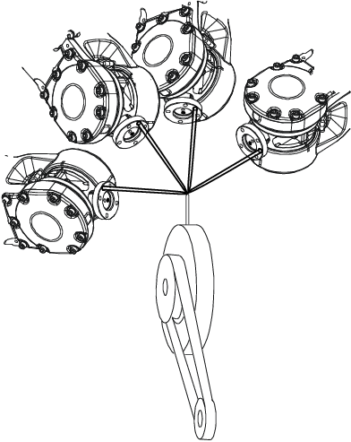

| 编程和测试 - 工具 | ||
| 固定工具设置 | ||
| 固定工具 | 在包含大型机械（例如切割工具、压具和冲压切具）的应用中，会使用固定工具。当机器人上的工具使用不便或操作困难时，您可以使用固定工具来执行操作。 有了固定工具，机器人就可握住工件。 | ||||||||||||||||
| 将工具固定 | 本节介绍如何将工具固定。
| ||||||||||||||||
| 将工件固定在机器人上 | 本节介绍如何将工件固定在机器人上。
| ||||||||||||||||
| 坐标系参考差异 | 本节介绍坐标系参考的差异。
| ||||||||||||||||
| 建立工具坐标系 | 根据与机器人上安装的工具的相同测量方法，测量固定工具数据以建立固定工具坐标系。 在本例中，大地坐标参照顶点必须与机器人连接。创建接近点时，请使用参照顶点的测量值来定义和使用工具。如需设置框架定向，您还需要在固定工具上附加延伸器。 计算建立固定工具的坐标系时，为了尽量减少错误，您应该手动输入参照顶点的工具定义。 您可以手动输入固定工具的定义。  |